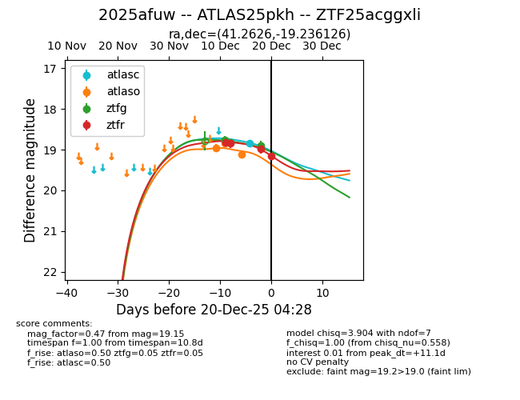
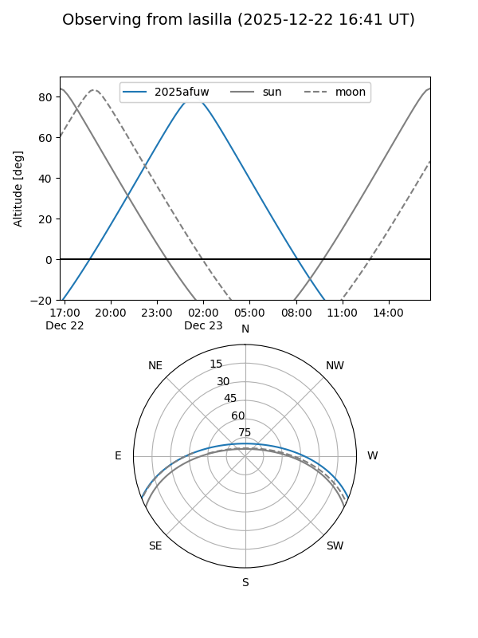
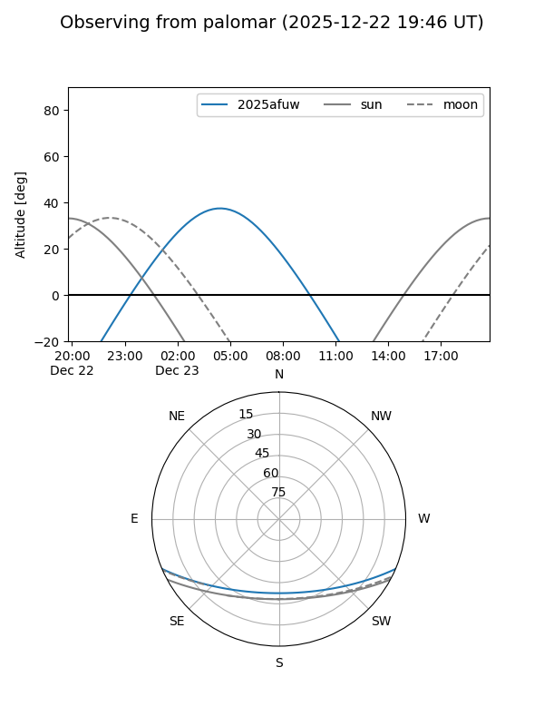
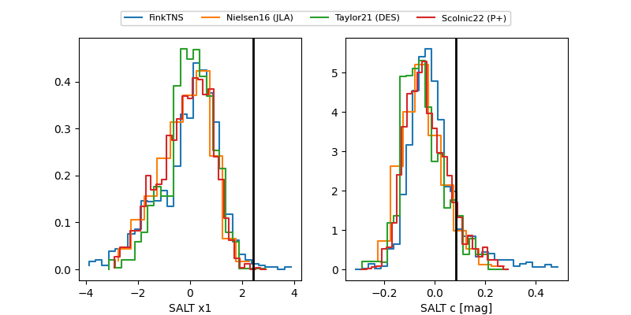

2025afuw
Target 2025afuw at 2025-12-18 12:02
Aliases and brokers:
FINK: fink-portal.org/ZTF25acggxli
Lasair: lasair-ztf.lsst.ac.uk/objects/ZTF25acggxli
ALeRCE: alerce.online/object/ZTF25acggxli
TNS: wis-tns.org/object/2025afuw
YSE: ziggy.ucolick.org/yse/transient_detail/2025afuw
alt names
ZTF25acggxli (ztf,fink_ztf)
2025afuw (tns,yse)
ATLAS25pkh (atlas)
Coordinates:
equatorial (ra, dec) = 41.2626,-19.23613
equatorial (HMS+DMS) = 02:45:03.03,-19:14:10.05
galactic (l, b) = (202.1554,-62.79484)
Photometry
last atlasc=18.84, atlaso=19.11, ztfg=18.89, ztfr=18.85
1 atlasc, 3 atlaso, 3 ztfg, 2 ztfr detections
Lightcurve

Visibility


Additional plots
